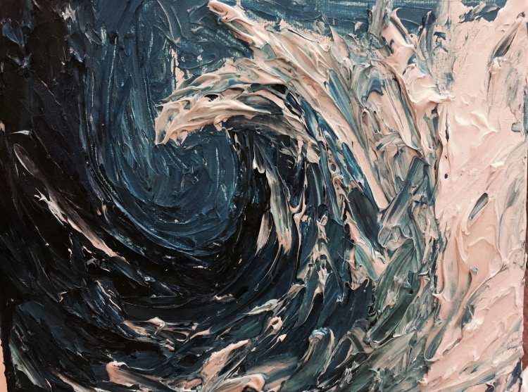

MIX
STEP 2
Mix the creativity of others with your own unique creativity. Mesh together perspectives that might seem contradictory. Insert your own knowledge and experiences.
The key to success was the brilliance of the differences.
Disney took these stories and retold them in a way that carried them into a new age. He animated the stories, with both characters and light. Without removing the elements of fear and danger altogether, he made funny what was dark and injected a genuine emotion of compassion where before there was fear.
The artist must make a contribution to the art he copies, by transforming it either subtly or significantly.
Science has provided the swiftest communication between individuals; it has provided a record of ideas and has enabled man to manipulate and to make extracts from that record so that knowledge evolves and endures throughout the life of a race rather than that of an individual.
Based upon it, a series of summaries of greater or less fullness and simplicity, for the homes and studies of ordinary people, for the college and the school, can be continually issued and revised. In the hands of competent editors, educational directors and teachers, these condensations and abstracts incorporated in the world educational system, will supply the humanity of the days before us, with a common understanding and the conception of a common purpose and of a common weal such as now we hardly dare dream of. And its creation is a way to world peace
The intersection between the arts and sciences, between liberal and practical education, should not just be a moment in the past, particularly not at a land-grant institution like Virginia Tech.
2. Modern science was made possible when artisanal practices—ways of making, doing, and inventing that had the same energy and excitement that we now see in some of the Virginia Tech hackathons and maker’s camps—intersected with a different excitement that surrounded liberal education.The intersection of those two ways of thinking—making and knowing—led to some of the most powerfully creative impulses
In the model of the T-shaped learner, practical education constitutes the stem of the “T”—the expertise and knowledge that ground you in the here and the now. Liberal education, by contrast, serves as the top “bar” of the “T”—that which allows you the breadth and range to balance your expertise, a balance needed precisely because the very nature of practical education is to be necessarily bounded in time. To create these kinds of learners, it may be useful to remember that, alongside invention, we need to find both inspiration and imagination. The greatest of land-grant institutions continue to integrate practical and liberal education, and they do so because technology never works without people as part of the equation, because innovation is fundamentally a human pursuit.
Through these concepts, Virginia Tech is poised to confront the changing future. Two resounding themes of this effort are dynamism and agility—characteristics not often used to describe higher education institutions in the traditional context. In order to achieve the environment we have outlined in this work, however, institutional structures will have to evolve to meet new demands. We will continuously innovate to evolve.
“What important problem can be solved only by engineers who are trained only in engineering, or by poets who have mastered only poetry?”